Все о мультишефах
Немного истории
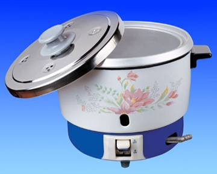Мультиварки
История мультиварки
Современная мультиварка — прямой потомок электрической рисоварки. Первую электрическую рисоварку выпустила компания Sony. Рисоварка представляла собой деревянную бочку с алюминиевыми электродами на дне. Главным достоинством рисоварки того времени, было наличие механического таймера, позволявшего точно задать длительность варки риса. Успех конструкции обеспечил высокий уровень продаж в Японии, а потом и во всем мире.
Что такое мультиварка
МУЛЬТИВАРКА - многофункциональный бытовой кухонный электроприбор, предназначенный для приготовления широкого спектра блюд. В процессе работы, мультиварка контролирует температуру, и время приготовления пищи. Пища, приготовленная в мультиварке, отличается особым вкусом и полезностью, ведь процесс приготовления происходит без доступа воздуха и при минимальном количестве воды, а потому продукты сохраняют все полезные витамины и минералы.
МУЛЬТИВАРКА - устройство, сочетающее в себе функционал различной бытовой кухонной техники:
- СКОРОВАРКА
- МЕДЛЕННОВАРКА
- ПАРОВАРКА
- КАШЕВАРКА
- РИСОВАРКА
- ДУХОВКА
- ЙОГУРТНИЦА
- СКОВОРОДА
- КАСТРЮЛЯ
- КАЗАН
Функциональные возможности каждого прибора
Скороварка
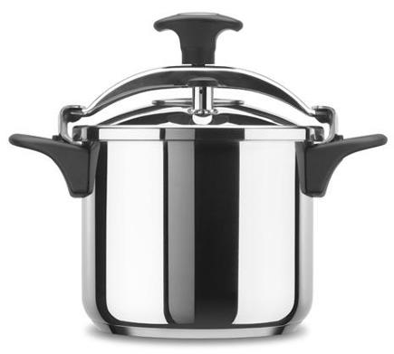Люди издавна стремились найти более быстрые способы приготовления еды. В скороварке можно варить, тушить, готовить на пару любые продукты. Даже самое жесткое мясо в скороварке сварится не более чем за час, а цыпленка, можно сварить всего за 15 минут вместо 45 минут в обычной кастрюле. Излюбленное россиянами блюдо холодец в скороварке готовиться 1,5 часа, тогда как приготовление обычным способом занимает не менее 4 часов.
Преимущества приготовления в скороварке по сравнению с обычными способами:
- Продолжительность приготовления сокращается в несколько раз за счет высоких температур и давления
- Во время приготовления в скороварке мясных блюд, нет необходимости добавлять воду, благодаря тому, что она не выпаривается.
- Полезные элементы, содержащиеся в продуктах, во время приготовления в скороварке не теряют своих свойств. Сами продукты сохраняют цвет и форму.
Медленноварка
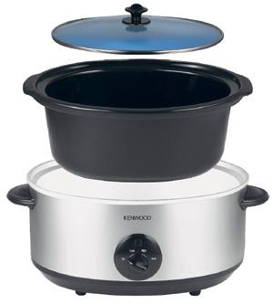Назначение медленноварки - готовить блюда, рецепты которых рассчитаны на длительное приготовление.
Принцип приготовления идентичен принципу приготовления в «Русской Печи». При таком приготовлении блюдо томится при температуре, не превышающей 80 °С, длительный промежуток времени. Пища, приготовленная в медленноварке, не пригорает, не требует постоянного контроля и перемешивания.
В медленноварке можно варить и тушить разнообразные блюда: голубцы, большие куски мяса, капусту, разнообразные каши. Медленноварку по достоинству оценят и те, кто увлекается консервированием, так как в ней очень удобно варить джем и варенье.
Чтобы приготовить блюдо с помощью медленноварки, достаточно поместить в кастрюлю все необходимые ингредиенты и задать нужную программу. У большинства медленноварок есть 2 режима приготовления:
- LOW (длительное приготовление 80 °С )
- HIGH (быстрое приготовление 95 °С )
Как рассчитать время приготовления в медленноварке:
- 1 час на плите или в духовке = 8 часов в длительном режиме приготовления
- 1 час на плите или в духовке = 4 часам в ускоренном режиме приготовления
Для чего нужно длительное приготовление пищи
В неспешно приготовленном при невысокой температуре блюде сохраняется гораздо больше полезных веществ, витаминов.
Продукты при таком способе приготовления получаются очень нежные. Особенно это касается мяса.
В медленноварке можно готовить без масла – это важный фактор для тех, кто заботится о здоровом и правильном питании. Приготовление в медленноварке поможет предотвратить появление лишних килограммов.
Пароварка
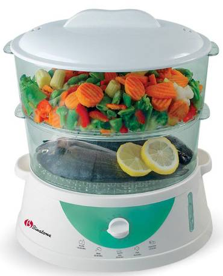Преимущество пароварок заключается в приготовлении пищи без холестерина и канцерогенов, которые образуются при тепловой обработке масла или жира на сковороде. В процессе приготовления продукты не нужно переворачивать, перемешивать и следить за процессом приготовления, в отличие от приготовления на обычной плите, где приходится следить за тем, чтобы котлеты не пережарились, а каша не пригорела.
Вам нужно всего лишь положить продукты и выставить время приготовления.
В результате обработки паром пища максимально сохраняет витамины, микроэлементы. Это позволяет наслаждаться не просто нежной и мягкой пищей, но и насытить организм полезными веществами.
Кашеварка
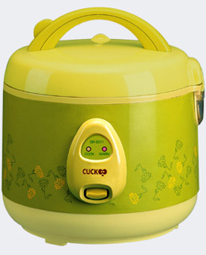Кашеварки предназначены для приготовления рисовой, гречневой, манной, пшенной, перловой и многих других каш. После окончания варки каши, прибор автоматически переходит в режим подогрева. Некоторые модели кашеварок имеют функцию отложенного старта до 12 часов и функцию пароварки, в комплект входит специальная решетка для пароварки.
Преимущества кашеварки: нет необходимости следить за процессом приготовлением.
Рисоварка
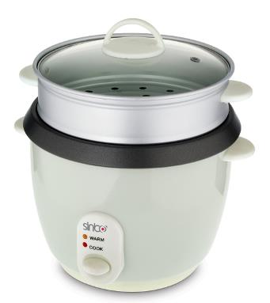Рисоварка обеспечивает удобство, простоту процесса приготовления риса и других круп. Этот кухонный прибор обладает всеми функциями для правильного приготовления риса по принципу «зернышко к зернышку». Рисоварка идеально походит для тех, кто любит готовить суши и роллы. Рис, приготовленный в рисоварке, не уступает рису, приготовленному в японских ресторанах.
Благодаря функции поддержания температуры, рисоварка сохранит рис горячим в течение запрограммированного времени до 6 часов.
Почему мультиварки стали, так популярны в России?

Вкусная и полезная пища, приготовленная в мультиварке, основательно заняла определенное место в нашем современном мире.
Легкий способ ухода за мультиваркой обеспечивает удобство и комфорт в использовании. Режим подогрева после приготовления удобен для тех, кто готовит задолго до ужина или обеда, а также для тех, кто хочет, чтобы блюдо не остывало, пока за столом собираются близкие люди.
Современные технологичные материалы, применяемые в производстве мультиварок, обеспечивают гарантию того, что пища, приготавливаемая в мультиварках соответствует современным требованиям пользователей. Высокая технологичность мультиварок обеспечивает несколько степеней защиты, таким образом, можно не беспокоиться о безопасности использования в быту мультиварок.
Конечно же, самое главное достоинство мультиварок заключается в их универсальности на кухне. Мультиварки, способны: тушить, варить, жарить, готовить на пару, томить и многое другое.
Обзор технологий мультиварок
Виды нагрева
Традиционный способ нагрева.
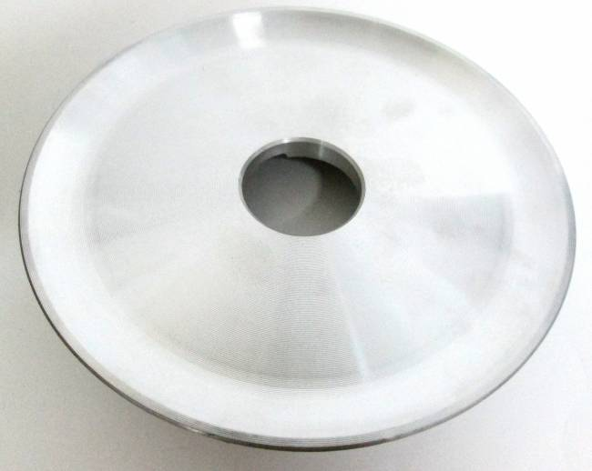 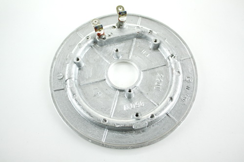При приготовлении блюда включается нагревательный элемент (ТЭН), расположенный на дне мультиварки
Индукционный способ нагрева.
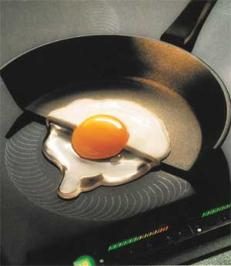Еще каких-то пару десятилетий назад невозможно было представить, что на одной части включенной конфорки плиты может находиться сырое яйцо, а на другой поджариваться яичница. Демонстрация подобных трюков была под силу только иллюзионистам. Появление электрических плит с индукционным принципом нагрева, сделало невероятное очевидным…
Спасибо Фарадею.
Явление электромагнитной индукции было открыто Майклом Фарадеем в 1831 г. Наверное, первые опыты гениального англичанина, в которых демонстрировалось появление наведенного тока в проводнике, находящемся рядом с другим проводником тока, без прямого соприкосновения между ними, «по воздуху», многим тоже казалось цирковым трюком. Должны были пройти десятилетия, чтобы электромагнитная индукция в полную силу заработала в трансформаторах и электродвигателях, став основой мира электричества.
Индукционная технология нагрева отличается от традиционной тем, что тепло возникает в самом дне и стенках посуды. Откуда оно там берется?
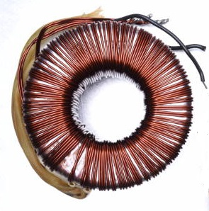Внутри корпуса, вокруг отделения для установки чаши, находится медная катушка, по которой протекает высокочастотный электрический ток. По законам, открытым Фарадеем, магнитное поле этого тока, пронизывая дно и стенки чаши, наводит в ней электрические токи, которые ее и разогревают.
Есть только одно условие, которое должно в буквальном смысле «железно» соблюдаться: для того, чтобы индукционный нагрев работал, посуда должна быть выполнена из материала с четко выраженными ферримагнитными свойствами. Проверку материалов на наличие таких свойств, производил в детстве любой из нас, когда получал в руки магнит: к одним предметам он не прилипал, к другим прилипал очень охотно: это и были ферромагнитные материалы.
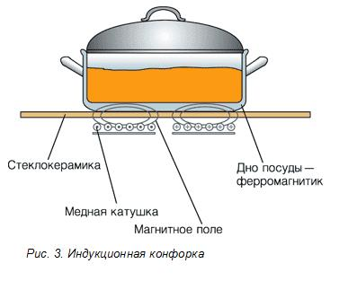По этому, чаши в индукционных мультиварках имеют несколько слоев, одним из которых обязательно является сталь.
Приборы с индукционным нагревом - самый современный вариант, который можно встретить на кухне. Они стоят в несколько раз дороже обычных, но отличаются свойствами, за которые люди готовы платить.
Для сравнения, КПД обычного нагревательного элемента составляет всего 30-40% (остальная энергия уходит на нагрев самого себя, корпуса и окружающей атмосферы), индукция способна показывать результат в 90%. Поэтому индукционный нагрев является самым экономичным и энергоэффективным. К тому же, нагрев посуды до заданной мощности (температуры) можно регулировать гораздо более точно.
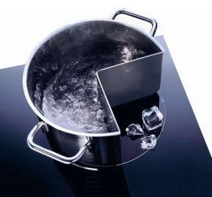В случае отсутствия посуды, нагрев не происходит. А это безопасность!
Ещё одно полезное свойство таких приборов - это быстрая скорость нагрева. Как следствие сокращается время приготовления пищи, сохраняя больше полезных микроэлементов и витаминов.
Давление.

Приготовление под давлением:
- Быстро - сокращает время приготовления до 60%.
- Полезно - сохраняет питательные свойства продуктов.
- Приготовление здоровой пищи - не добавляя воды, масла или жиров.
- Экономит расходы на электроэнергию до 60%.
- Эстетично – сохраняется натуральный цвет продуктов.
Категории мультиварок
Традиционные без давления
Этим «поварам» нужно говорить, что делать и как делать, а иначе они попросту могут испортить блюдо, а это ваше время и деньги.
Традиционные с давлением
Эти «повара» уже могут обладать базовыми кулинарными способностями. Но если вам захочется что нибудь новое и изысканное, то ваше вмешательство в процесс готовки станет неизбежным и даже ваша помощь не гарантирует результат.
Категория - Индукционные с давлением и без давления
Эти «повара» гораздо технологичнее и могут знать толк в кулинарии, и могут предложить вам базовые блюда. Ресторанные изыски высокой кухни эти повара вам не способны предложить, так как не обладают потенциалом для этого.
С появлением Мультишефа, появилась новая, 4-я, категория!
Категория - Мультишеф
Эти «повара» обладают всеми возможностями вышеуказанных категорий. Также могут вам предложить совместные эксперименты на вашей кухне, даже если вы замахнетесь на высокие достижения в ресторанной гастрономии.
Мультишеф BORK U800, не просто самый лучший повар из всех, он еще и самый универсальный.
Он способен самостоятельно готовить привычные для нас блюда, готов предложить совместные эксперименты и главное, он предлагает вам готовые решения из мира высокой кухни.
ПРИМЕР: Мультишеф BORK U800 оснащен 3-мя авторскими рецептами от гуру ресторанной гастрономии Карло Греку.
Клапан
Традиционный клапан выпуска пара (без давления).
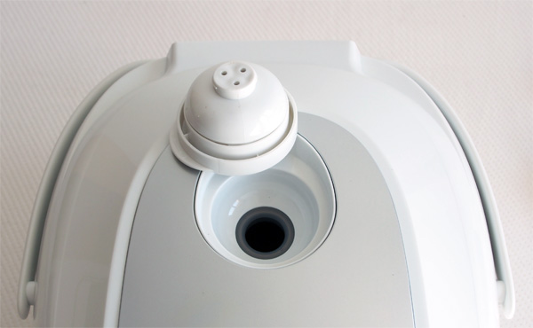Представляет собой простейшее устройство, расположенное в верхней части крышки мультиварки и предназначено для выпуска излишков пара в процессе приготовления. Не способен создать давление, как следствие ускорить процесс приготовления пищи.
Механический клапан выпуска пара
Может состоять из грузика, который чаще всего выглядит как конус или шарик, расположенный на тонкой трубке для выпуска пара из скороварки. Принцип работы состоит в том, что под собственным весом грузик перекрывает выход пара из кастрюли. При возникновении избыточного давления поток пара выталкивает груз и происходит сброс давления.
Электромеханический клапан выпуска пара
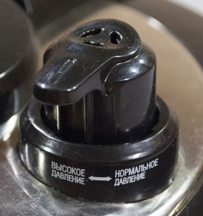Принцип работы схож с механическим клапаном с добавлением механического толкателя, способного в любой момент отодвинуть груз с отверстия трубки для сброса давления пара.
Электромагнитный клапан выпуска пара
Эффективное электромеханическое устройство, предназначенное, для регулирования потоков всех типов жидкостей и газов.
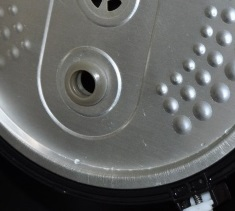Открытие и закрытие электромагнитного клапана осуществляется без механических усилий — посредством электромагнитной катушки путем подачи на неё электрического напряжения.
Применяется в сложных технологических процессах. С его помощью можно дистанционно подать/вывести требуемый объём жидкости, пара или газа в нужный момент времени.
Чаша мультиварки
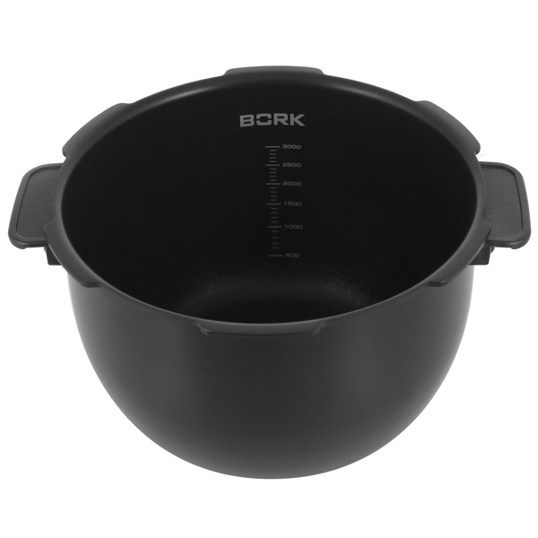Внутри мультиварки находится съемная чаша, в которой происходит процесс приготовления. Чаша должна обладать высокой теплопроводностью, устойчивостью к механическим воздействиям и легкостью очистки. Чаша мультиварки может быть с ручками и без ручек. Чаша с ручками более удобна в использовании. Ручки не нагреваются это удобно при ее выемке. Также необходимо обращать внимание на объем чаши. Часто можно встретить два значения – общий и полезный объем.
Общий объем: Можно использовать для тушения овощей, мяса, рыбы, птицы.
Полезный объем: Следует учитывать, при приготовлении жидких продуктов и продуктов, увеличивающихся в объеме (супы, каши).
Типы чаш:
Алюминий
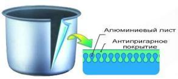Обладает небольшим весом и высокой теплопроводностью (в 4 раза лучше чугуна и в 13 раз лучше нержавеющей стали). Является основой большинства чаш, срок службы которых, во многом зависит от толщины металлического листа, из которого они изготовлены.
Недостатки алюминиевых чаш
Дно и стенки качественных изделий должны иметь толщину не менее 2,5-3 мм. Чаши тоньше 2,5 мм хотя и являются самыми недорогими, но и служат совсем недолго - 1,5-2 года. Они быстро выходят из строя вследствие деформации дна и перегрева покрытия.
Керамика
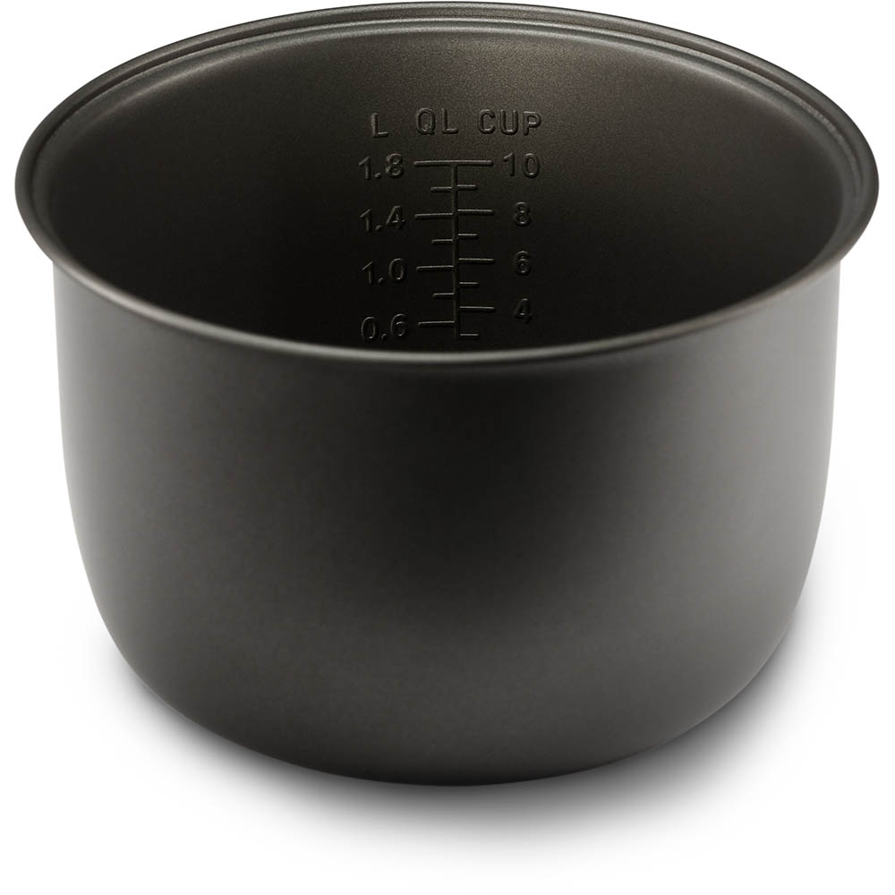Самое большое достоинство керамической посуды - экологическая чистота! Т.к. для ее производства используется природный материал – глина.
Керамическая посуда обладает очень важной особенностью: холодный сок останется холодным, даже если будет стоять на солнце, керамическая кружка сохранит теплоту чая несколько часов. Молоко в такой посуде долго не скисает, а варенье не покрывается плесенью. Не удивительно, что самое вкусное жаркое получается именно в глиняных горшочках. Ведь продукты в них не варятся, а томятся, сохраняя при этом все полезные свойства и витамины.
Керамическую посуду ценят не только за удивительные свойства, но и за ее универсальность: в ней можно и готовить, и подавать готовые блюда на стол.
Недостатки керамики
- Быстрая потеря антипригарных свойств.
- Уход за керамическими чашами не всегда предполагает использование посудомоечных машин.
- Керамическое покрытие боится резких перепадов температуры.
- Хрупкость при механических контактах (удар, падение).
- Многослойные
Последовательное соединение различных слоёв, позволяет увеличить общую теплопроводность, а так же способность удержания тепла внутри чаши. При этом сокращается время приготовления пищи и расход электроэнергии.
Антипригарные покрытия (для информации)
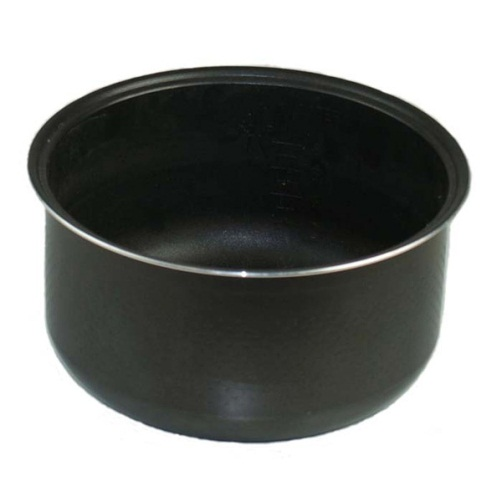Основные характеристики антипригарных покрытий – термостойкость (антипригарные поверхности сохраняют целостность при разогреве до 260° С), высокая стойкость к истиранию, легкость очищения посуды, сохранение полезных свойств приготовляемой пищи и пригодность для мытья в посудомоечных машинах. Антипригарное покрытие не обладает высокой прочностью поверхности, поэтому не рекомендуется применять металлические предметы при использовании такой посуды.
Традиционные антипригарные покрытия – разработаны на основе полимера политетрафторэтилен (ПТФЭ), это инертный материал со свойствами близкими к свойствам благородных металлов и способностью не вступать в химические реакции с большим числом агрессивных сред, не токсичны.
Однако тефлоновое покрытие в своём составе содержит токсические вещества, которые при перегреве посуды начинают выделяться в воздух и пищу. Влияние 98% из этих веществ на здоровье человека до сих пор не изучено. Но достоверно известно, что все вещества, которые выделяет тефлон при перегревании, обладают способностью накапливаться в организме человека.
Правила использования посуды с антипригарным покрытием:
- не используйте сковороды с антипригарным покрытием более 3 - 5 лет (после 2000 - 3000 нагреваний даже самое лучшее тефлоновое покрытие начинает трескаться);
- выкидывайте сковородки с потрескавшимся или поцарапанным антипригарным покрытием;
- по возможности реже мойте посуду с антипригарным покрытием при помощи сильных моющих средств;
- не накаляйте сковородку с антипригарным покрытием (не позволяйте ей нагреваться даже до 200°С).
Методы нанесения антипригарного покрытия
Роликовый накат позволяет эффективно наносить все слои покрытия за малое время производственного цикла. Толщина антипригарного покрытия при этом составляет до 25 мкм.
Метод роликового наката позволяет снизить стоимость нанесения антипригарного покрытия – достигается экономичность производства и, как следствие, доступность для потребителя и массовость выпуска продукции.
В основном покрытие наносится на тонкие алюминиевые чаши, изготовленные методом штамповки. Срок службы посуды с антипригарным покрытием нанесенным методом роликового наката составляет около 12 месяцев.
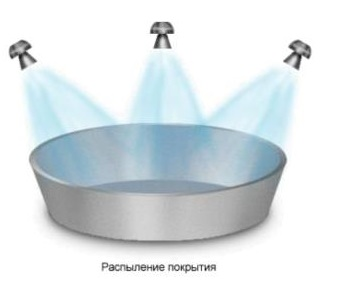Напыление метод нанесения антипригарного покрытия, основное достоинство которого – получение антипригарных покрытий значительной толщины (до 60 мкм).
Это позволяет добиться высокой прочности покрытия и увеличения срока службы всего изделия с сохранением антипригарных свойств.
Посуда, произведенная методом напыления, относится к классу элитной посуды. Срок службы изделий с антипригарным покрытием, нанесенным методом напыления, составляет 3-4 года.
Керамические покрытия
Покрытие очень похоже на жаропрочное стекло: твёрдое, жаростойкое (выдерживает температуру до 450°С) и экологичное, но не очень долговечное:
- покрытие очень боится перепадов температуры. Например, когда при жарке блинов вы наливаете холодное тесто на разогретую сковороду, покрытие сковороды испытывает сильный перепад температур и трескается. Каждый раз при перепаде температур образуются микротрещины, которые со временем потеряют приставку «микро».
- керамическое покрытие разрушается при воздействии щелочной среды посудомоечной машины,
- покрытие из керамики имеет низкую стойкость к истиранию.
Композитные покрытия на основе тефлона и его аналогов
Не секрет, что обладая антипригарными свойствами, тефлон имеет низкую механическую прочность и повреждается, при неаккуратном использовании посуды.
Производители нашли решение этой проблемы. В последние годы большую популярность приобрели антипригарные покрытия, содержащие различные добавки, существенно повышающие прочность традиционных материалов.
Типы управления
Кнопочное (электронное тактовое) - время на электронном дисплее выставляется посредством кнопок или поворотным шатлом.
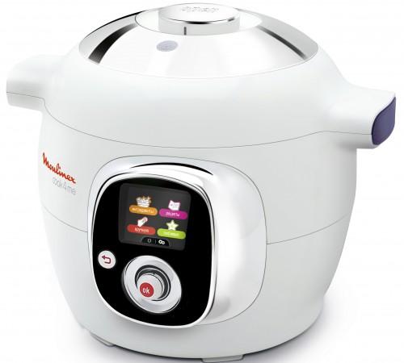Псевдосенсорное – электронное управление, где кнопки спрятаны за пластиковой слюдой (пленкой).
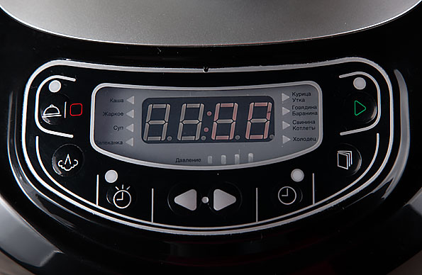Сенсорное управление – тепловой сенсор, реагирующий на прикосновения пальцев.
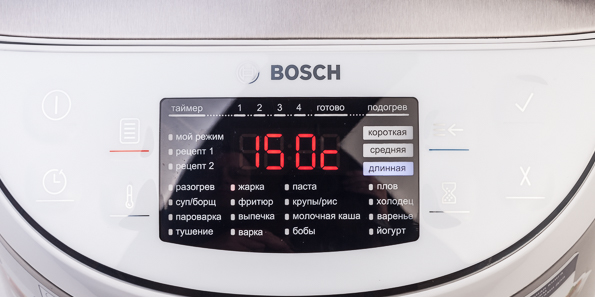Управление процессами работы
Сегодня часто можно услышать, что работой мультиварки управляет микропроцессор. Это действительно так.
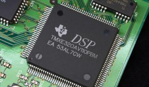- У традиционных мультиварок он контролирует температуру необходимую для выбранного режима.
- У традиционных с давлением – температуру и запрограммированное для данного режима давление.
- У индукционных с давлением – температуру с точностью до градуса и запрограммированное для данного режима давление.
Виды программ в мультиварках
Сенсорная программа – программа, самостоятельно определяющая параметры приготовления (время, температура, давление) исходя из количества закладываемых продуктов.
Если вы пригласили друзей, умный повар приготовит блюдо самостоятельно, поняв, что вы сегодня не один!
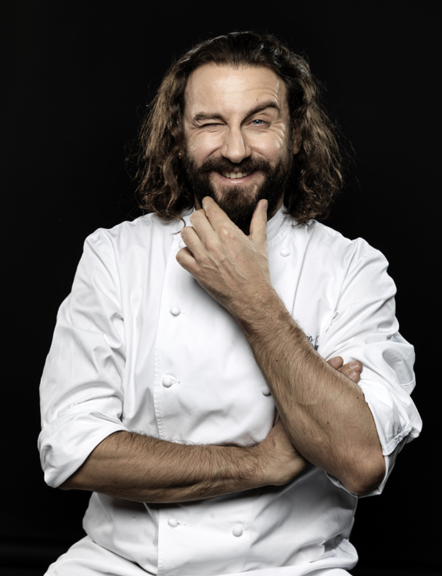Также микропроцессор необходим для сенсорных программ, где время приготовления пользователем не выставляется.
Автоматическая программа – программа, в которой параметры приготовления (время, температура, давление) установлены изначально. Следовательно, количество закладываемых продуктов не влияют на параметры приготовления, они не изменены.
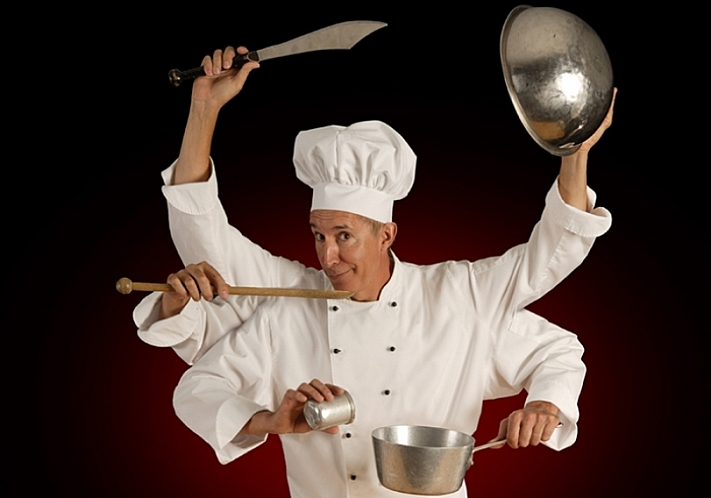Интеллектуальная программа для тех, кто не любит экспериментировать на кухне и предпочитает довериться «повару».
Автоматическая программа с изменяемым параметром приготовления - программа, в которой вы можете изменять параметр приготовления (время). Такая программа также является автоматической, так как обладает предустановленными параметрами (температура, время, давление).
Программа помогает делать первые шаги в искусстве приготовления.
Мультиповар – программа с изменяемыми параметрами (время, температура, давление).
Данная программа является полностью настраиваемой, но обладает предустановленным временем и температурой приготовления
Вы достигли больших высот в искусстве приготовления, но если не желаете останавливаться на достигнутом то программа мультиповар – для вас!
Авторские Рецепты – автоматическая программа с установленными параметрами приготовления (время, температура, давление). Установленные параметры подобраны особым образом для того, чтобы нажатием одной кнопки вы могли приготовить достаточно сложные блюда.
Вам, захотелось, посетить ресторан не выходя из дома, для этого нужно просто нажать одну кнопку!